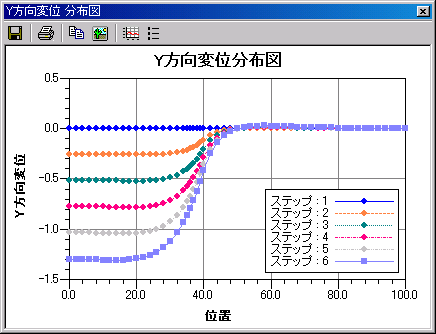
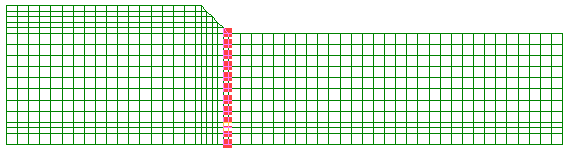
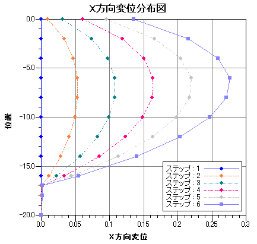
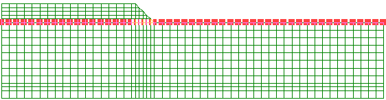
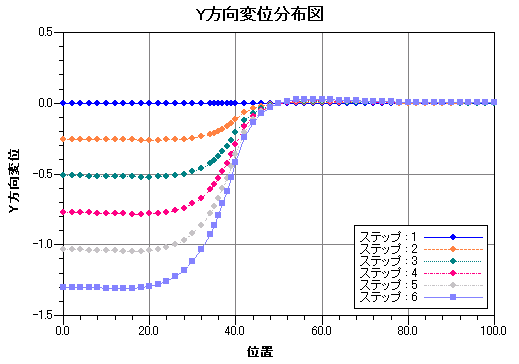
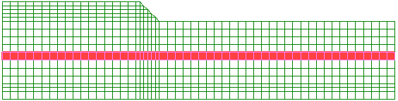
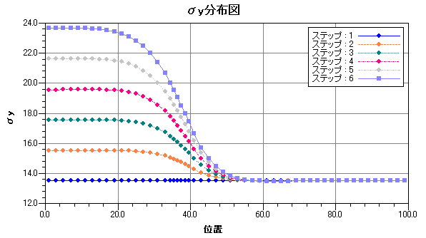
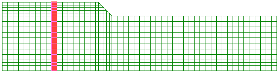
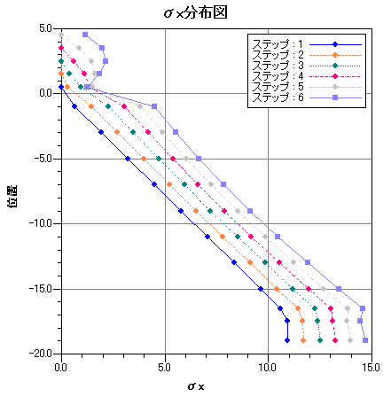

節点もしくは要素を選択中にメイン画面メニューの[ツール]−[分布図]を選択すると、分布図を表示できます。節点・要素の選択方法は以下をご参照下さい。分布図・時系列図では共通な操作があり、グラフ設定は共用します。以下の「共通操作」と「グラフ設定」をご参照下さい。

以下に分布図の操作手順を示します。
- 「コンタアイテム」から計算結果を選択します。
- 節点もしくは要素を選択します。
- メイン画面メニューの[ツール]−[分布図]を選択し分布図を表示します。
- 「系列表示設定」から不要な系列を外します。
分布図はX軸に計算値、Y軸に位置もしくは、X軸に位置、Y軸に計算値のグラフを作成することができます。選択された節点座標（要素の場合は重心位置の座標）の最大距離が長いほうを位置の軸とします。以下に分布図作成例を示します。
- 盛土法尻位置のX方向変位（水平変位）分布図
- 地表面のY方向変位（沈下量）分布図
- 地盤中央位置水平方向σy（鉛直方向応力）分布図
- 深度方向σx（水平方向応力）分布図
[盛土法尻位置のX方向（水平変位）分布図] X軸計算値−Y軸位置 

[地表面沈下量のY方向（沈下量）分布図] X軸位置−Y軸計算値 

[地盤中央位置水平方向σy（鉛直方向応力）分布図] X軸計算値−Y軸位置 

[深度方向σx（水平方向応力）分布図] X軸位置−Y軸計算値 
